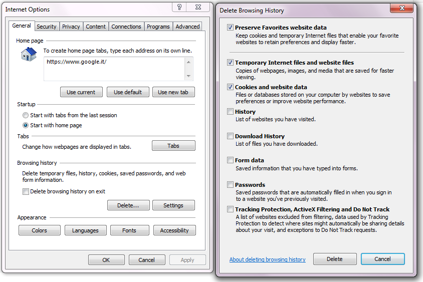

Example of raster dataset:

A raster dataset consists of a matrix of cells ("pixels") organized into rows and columns (i.e. a grid) where each cell contains a value representing information (e.g. temperature). Common raster datasets are digital aerial photographs, imagery from satellites, digital pictures, or even scanned maps.
Example of raster dataset:
Shapefiles are datasets with a simple, format for storing the geometric location and attribute information of geographic features. Geographic features in a shapefile can be represented by points, lines, or polygons (areas). The workspace may also contain dBASE tables, which can store additional attributes that can be joined to a shapefile's features.
Example of shapefile:

The providers of datasets available in Climate ADAPT use a Spherical Mercator map projection, which is a Mercator projection that treats the Earth as a sphere rather than as an ellipsoid.
This affects calculations performed when treating the map as a flat plane, and it is therefore important to be aware of this when working with these map providers.
In order to properly overlay data on top of the maps provided by the commercial API providers, it is necessary to use this projection. This applies primarily to displaying raster tiles over the commercial API layers (e.g. TMS / Tile Map Service, WMS / Web Map Service, or other similar standards for web mapping).
In order to work well with the existing commercial APIs, many users who create data designed for use within Google Maps will also use the "Spherical Mercator" map projection. One prime example is OpenStreetMap, whose raster map tiles are all projected into this projection.
Map projections in GIS are commonly referred to by their "EPSG" (European Petroleum Survey Group) identifier codes. One common identifier is "EPSG:4326", which describes maps where latitude and longitude are treated as X- and Y-values. Spherical Mercator has an official designation of "EPSG:3857". However, before this was established, a large amount of software used the identifier "EPSG:900913". This is an unofficial code, but is still the commonly used code in OpenLayers. Any time you see the string "EPSG:4326", you can assume it describes latitude and longitude geographic coordinates. Any time you see the string "EPSG:900913", it will be describing coordinates in X- and Y-coordinates in metres.
In order to display the interactive graphs with the browser Internet Explorer, please configure "Internet Options" as follows:
1. Select Tools >> Internet Options.
2. Click the Settings button in Browsing History.
3. Select the "Every time I visit the webpage" radio button.
4. Click OK to close the Settings dialog.
5. Click OK to close the Internet Options dialog.
To view and delete your browsing history:
1. Select Tools >> Internet Options.
2. Click the "Delete" button in Browsing History.
3. Select "Temporary Internet files and website files" and "Cookies and website data"
4. Clic Delete to delete and close the Settings dialog.
5. Click OK to close the Internet Options dialog.

More info about browsing history here.
No specific setting for other browsers.
Remember to turn-off popup blocker.